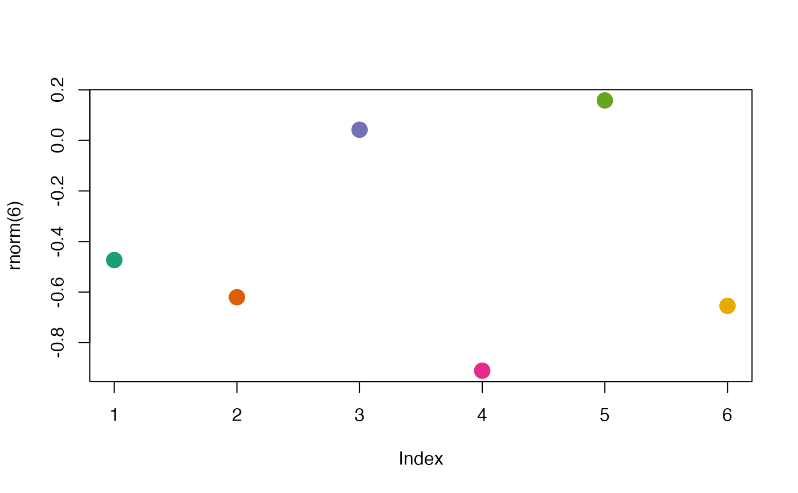
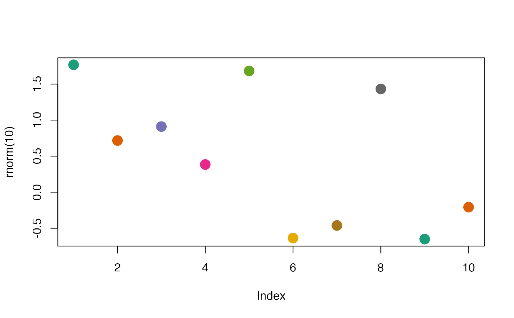
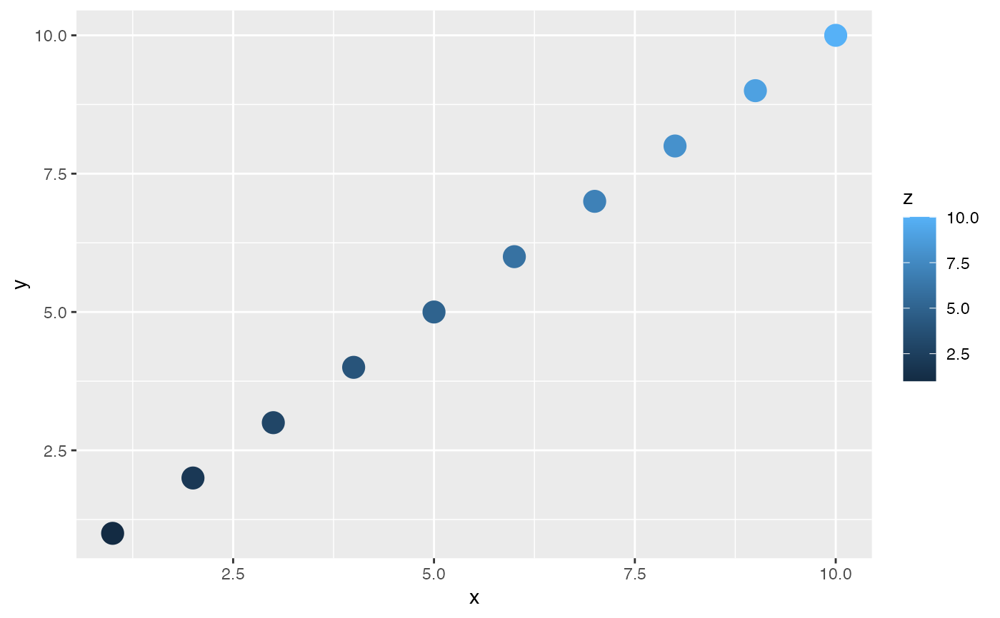
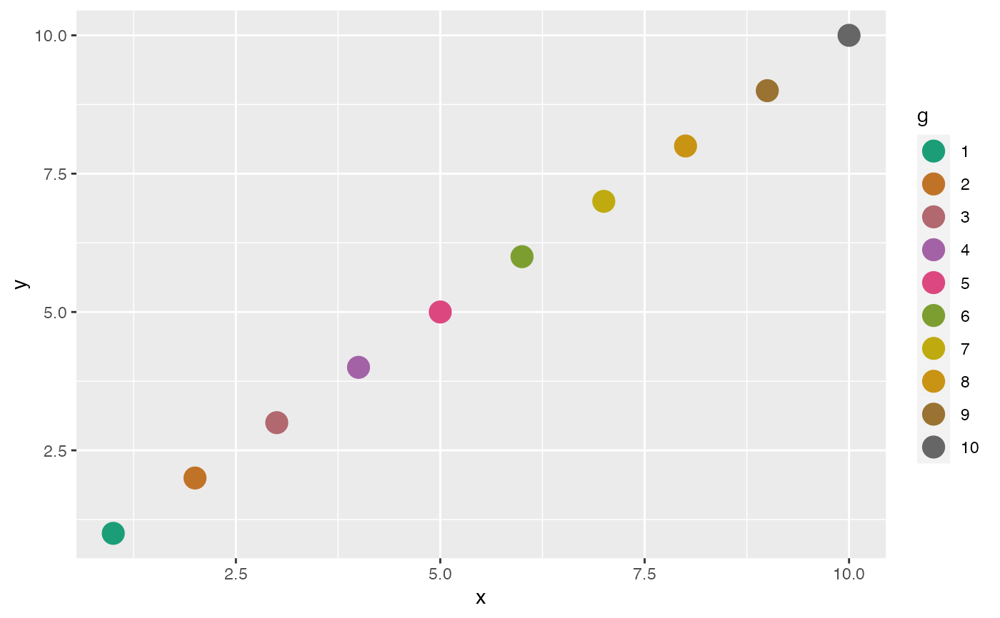
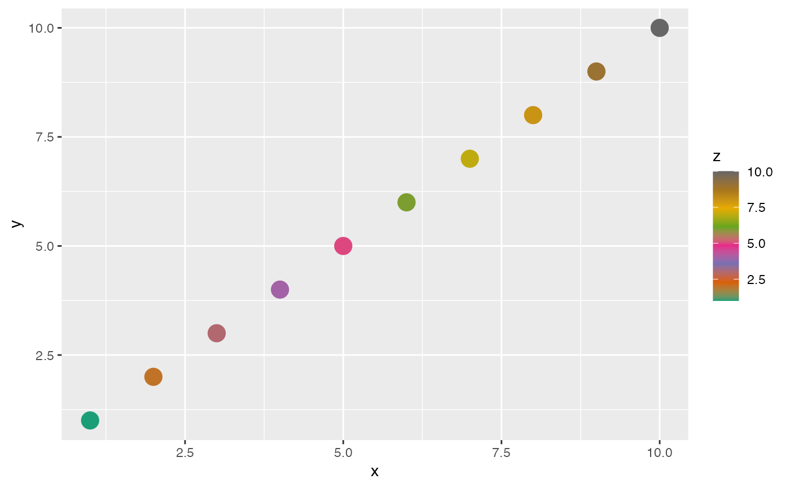
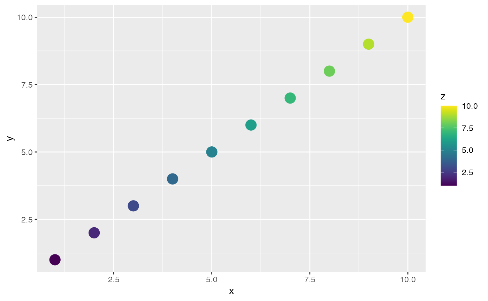
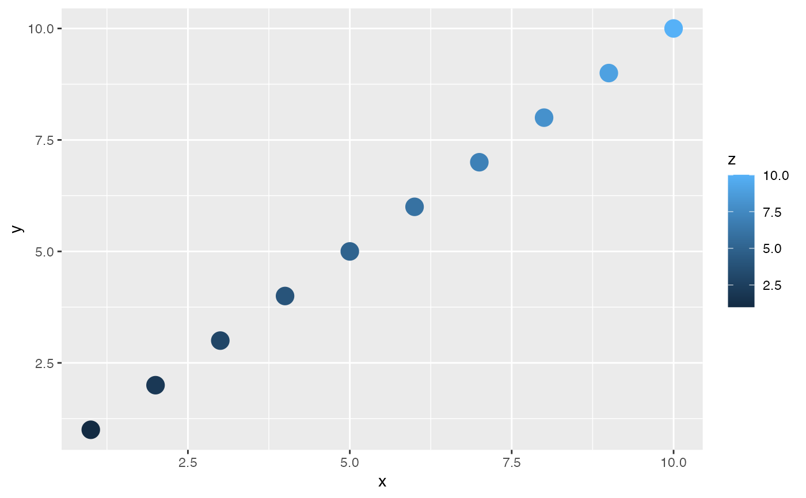
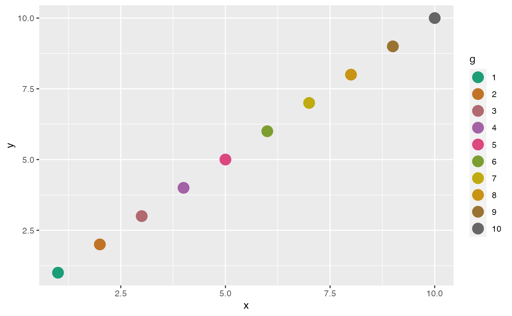
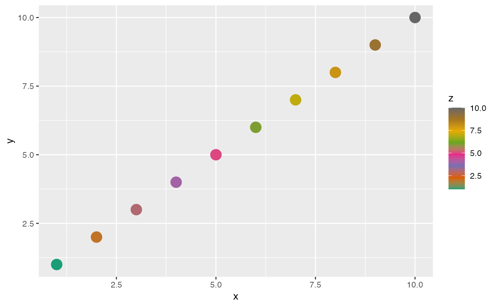
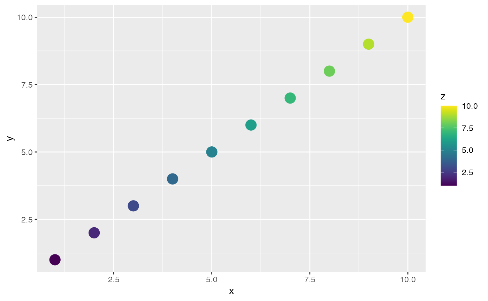

JASP color palettes
colors.RdJASP color palettes
JASPcolors(palette = getGraphOption("palette"), asFunction = FALSE)
scale_JASPcolor_continuous(palette = getGraphOption("palette"), ...)
scale_JASPfill_continuous(palette = getGraphOption("palette"), ...)
scale_JASPcolor_discrete(palette = getGraphOption("palette"), ...)
scale_JASPfill_discrete(palette = getGraphOption("palette"), ...)Arguments
- palette
Palette to choose from.
- asFunction
Should a function be returned or the raw colors? If a function is returned, it either takes a single integer or a vector in 0, 1 as input.
- ...
Further arguments for
scale_colour_continuous.
Value
Either a character vector of colors or a function.
Details
For ggplot2s, the convenience functions scale_JASPcolor_\* and scale_JASPfill_\* exist.
Examples
library(ggplot2)
#>
#> Attaching package: ‘ggplot2’
#> The following objects are masked from ‘package:jaspGraphs’:
#>
#> geom_line, geom_point, scale_x_continuous, scale_y_continuous
library(jaspGraphs)
setGraphOption("palette", "colorblind")
# use colors directly
colors <- JASPcolors("colorblind")
plot(rnorm(6), col = colors, pch = 16, cex = 2)

colors <- JASPcolors("colorblind")
plot(rnorm(10), col = colors, pch = 16, cex = 2)

# use a function if you want an arbitrary number of colros
colFun <- JASPcolors(palette = "colorblind", asFunction = TRUE)
plot(rnorm(10), col = colFun(10), pch = 16, cex = 2)
 # use colorscales in ggplot2
e0 <- 1:10
df <- data.frame(x = e0, y = e0, z = e0, g = factor(e0))
g0 <- ggplot(df, aes(x = x, y = y, color = z, fill = z)) + geom_point(size = 5)
g1 <- ggplot(df, aes(x = x, y = y, color = g, fill = g)) + geom_point(size = 5)
g0

g1 + scale_JASPcolor_discrete() + scale_JASPfill_discrete()

# colorblind is not really suited for a continuous color scale
g0 + scale_JASPcolor_continuous() + scale_JASPfill_continuous()

# viridis already looks a lot better!
setGraphOption("palette", "viridis")
g0 + scale_JASPcolor_continuous() + scale_JASPfill_continuous()

# reset the palette to it's default if you changed it globally!
setGraphOption("palette", "colorblind")
# use colorscales in ggplot2
e0 <- 1:10
df <- data.frame(x = e0, y = e0, z = e0, g = factor(e0))
g0 <- ggplot(df, aes(x = x, y = y, color = z, fill = z)) + geom_point(size = 5)
g1 <- ggplot(df, aes(x = x, y = y, color = g, fill = g)) + geom_point(size = 5)
g0

g1 + scale_JASPcolor_discrete() + scale_JASPfill_discrete()

# colorblind is not really suited for a continuous color scale
g0 + scale_JASPcolor_continuous() + scale_JASPfill_continuous()

# viridis already looks a lot better!
setGraphOption("palette", "viridis")
g0 + scale_JASPcolor_continuous() + scale_JASPfill_continuous()

# reset the palette to it's default if you changed it globally!
setGraphOption("palette", "colorblind")